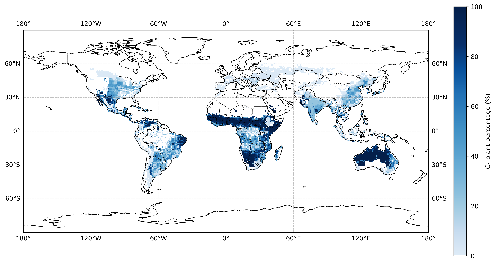
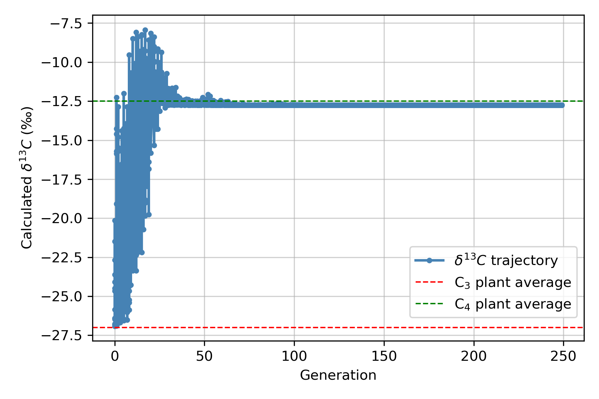
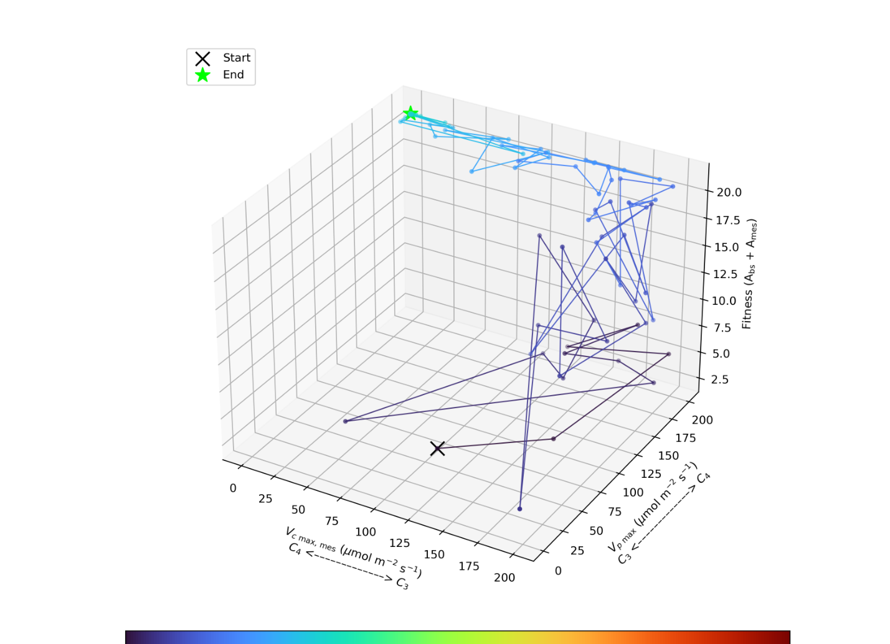

Physiological viability
- Carbon and photorespiratory balance
- Energy and resource allocation
- Water and thermal feasibility
- Anatomical transport constraints
Plant evolution · continuum view
The research question is how viable intermediate combinations arise and persist when anatomy, biochemistry, water transport, heat and environmental history are coupled.



Continuum logic
Intermediate mechanisms—including photorespiratory concentration when relevant—should emerge from a mechanistic trait model rather than being imposed as a mandatory sequence.
Scientific constraints
A candidate intermediate must satisfy the coupled physiology and also be reachable under the assumed genetic and developmental variation.